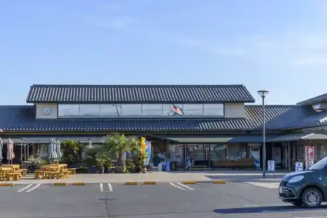
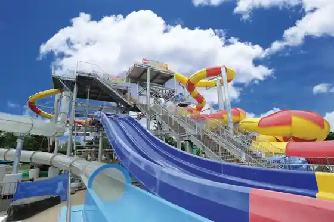
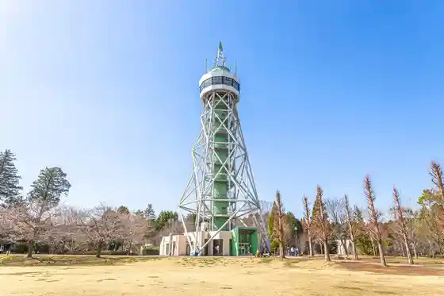
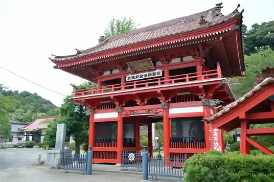

Hasunuma Seaside Park
Sanmu, Chiba · 0475-86-3171 · Official / source link
Roadside Station Orai Hasunuma
Sanmu, Chiba · 0475-80-5020 · Official / source link

Hasunuma Uota Garden
Sanmu, Chiba · 0475-86-3171 · Official / source link

Sambu no Mori Park
Sanmu, Chiba · 0475-80-9100 · Official / source link

Nami Setsu Fudo In (Naruto Yama Fudo Incho Kachi Tera)
Sanmu, Chiba · 0475-82-2176 · Official / source link

Somurie Farm
Sanmu, Chiba · 080-9394-7053 · Official / source link
Jizake Mai Sakura Moriya Shuzo
Sanmu, Chiba · 0475-86-2016 · Official / source link
Ari no Mi Farm
Sanmu, Chiba · 0475-89-1719 · Official / source link
Denka Beach
Sanmu, Chiba · 0475-80-1202 · Official / source link
Ito Sachio no Seika (Sanmu Folk History Museum)
Sanmu, Chiba · 0475-82-2842 · Official / source link
Aiba Ichigo Sono
Sanmu, Chiba · 090-8046-0015 · Official / source link
Nakashita Beach
Sanmu, Chiba · 0475-80-1202 · Official / source link
Sanmu Midori no Kaze Sanmu Mise
Sanmu, Chiba · 0475-80-9180 · Official / source link
Tegena Farm
Sanmu, Chiba · 090-6017-7672 · Official / source link
Arino Mi En Oto Campground
Sanmu, Chiba · 0475-89-1719 · Official / source link
Oyama Farm
Sanmu, Chiba · 0475-84-4115 · Official / source link
Ishibashi Ichigo Sono
Sanmu, Chiba · 090-6149-4910 · Official / source link
Uchiyama Ichigo Sono
Sanmu, Chiba · 0475-82-4491 · Official / source link
Sutoroberiihausu Ote
Sanmu, Chiba · 090-1803-3144 · Official / source link
Kaji Ichigo Sono (Kyu Kote Ichigo Sono)
Sanmu, Chiba · 0475-82-5758 · Official / source link
Hirokuchi Ichigo Sono
Sanmu, Chiba · 0475-82-3553 · Official / source link
Sanmu Midori no Kaze Naruto Mise
Sanmu, Chiba · 0475-82-3214 · Official / source link
Ishida Farm
Sanmu, Chiba · 0475-88-2367 · Official / source link
Kubo Hara Ichigo Sono
Sanmu, Chiba · 0475-82-5717 · Official / source link
Midorikawa Ichigo Sono
Sanmu, Chiba · 0475-82-4304 · Official / source link
Junko no Ichigo Sono
Sanmu, Chiba · 0475-82-5948 · Official / source link
Maruki Ichigo Sono
Sanmu, Chiba · 0475-82-4392 · Official / source link
Sho An Ichigo Sono
Sanmu, Chiba · 0475-82-4493 · Official / source link
Akira Ichigo Sono
Sanmu, Chiba · 0475-82-0938 · Official / source link
Sugitani Ichigo Sono
Sanmu, Chiba · 0475-82-4416 · Official / source link
Sakuta Ichigo Sono
Sanmu, Chiba · 0475-82-2343 · Official / source link
Kawatsura Ichigo Sono
Sanmu, Chiba · 090-9009-6572 · Official / source link